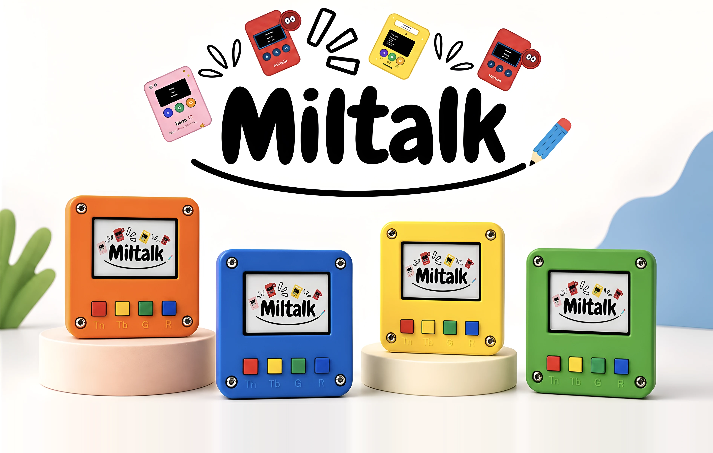
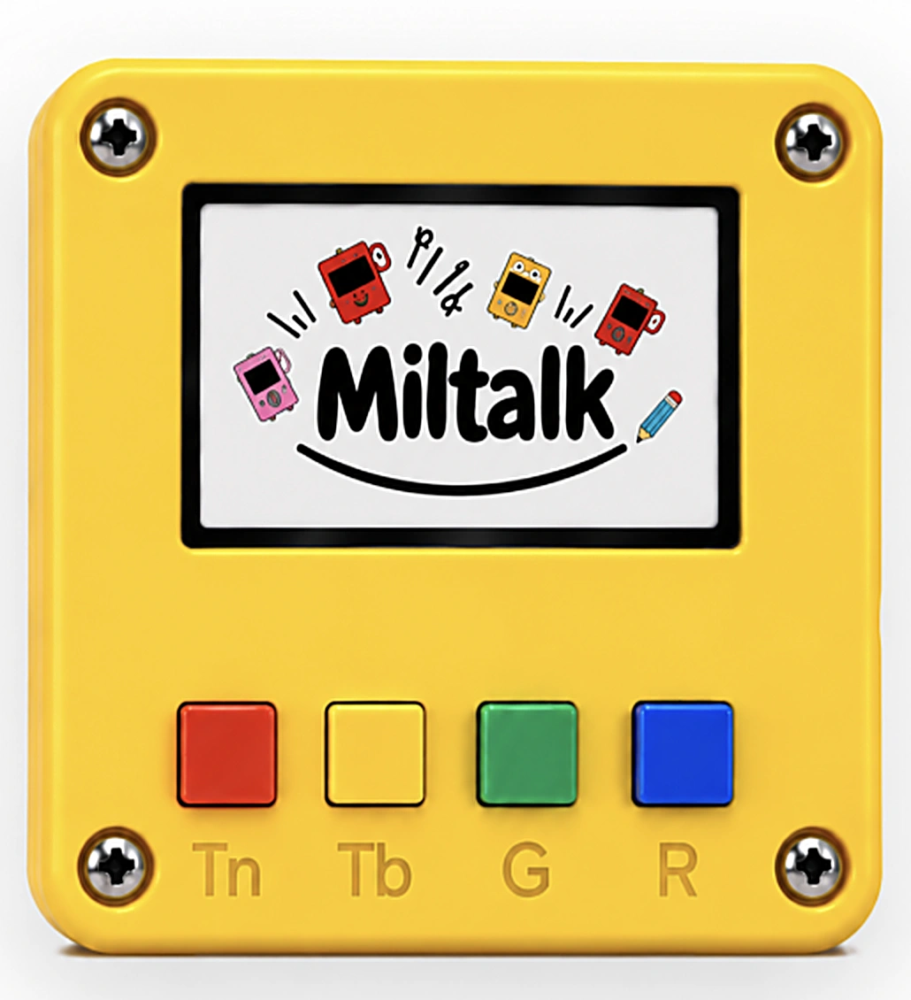
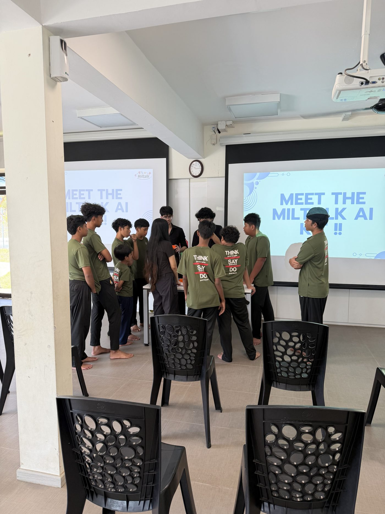
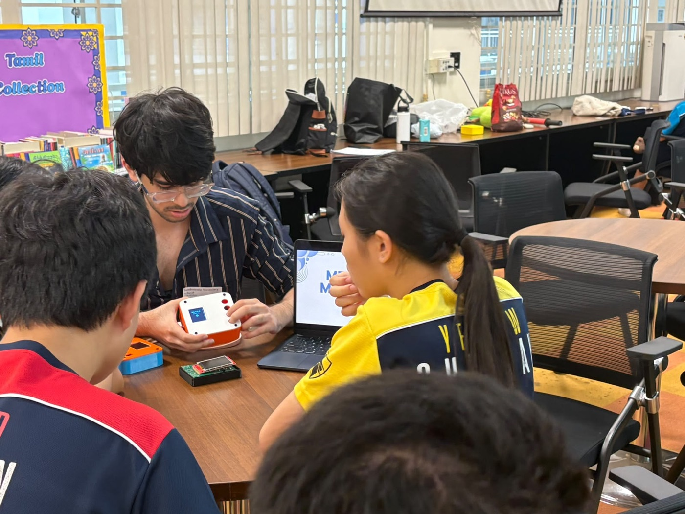

Miltalk Vision Kit
Train with images
Use its camera to collect visual examples: colour, shape, angle and light all become part of the investigation.
Hands-on AI literacy for kids aged 9–14
For primary and secondary schools
Miltalk is a handheld AI learning kit that children teach using their own examples. The Vision Kit has a camera for pictures. The Audio Kit has a microphone for sounds. Children choose two categories, collect examples and teach the kit to tell them apart.

Miltalk so far
Children encounter AI in their apps, classrooms and everyday lives. We started Miltalk to help them understand how a machine learns from data. By teaching a kit themselves, they can see how their examples shape its answers and why those answers need checking.
Classification means predicting which category something belongs to. It is one of the tasks used in AI. Learning it gives children a concrete way to investigate training data, recognise mistakes and test whether a model works on something new.
Both kits let children collect examples, train a model and test its predictions.
Miltalk Vision Kit
Use its camera to collect visual examples: colour, shape, angle and light all become part of the investigation.

Miltalk Audio Kit
Use its microphone to compare sounds and explore how volume, rhythm and surroundings affect a result.
Children teach classification by doing it. For example, they label pictures as recyclable or non-recyclable, then show the kit a new object. If its prediction is wrong, they look at the training examples, add better ones and test again.
Give the kit examples for two categories.
Try an example it has not seen before.
Notice the wrong result and ask which examples led to it.
Add or change examples, then test again.
Recognising a category is useful in many familiar AI features. Miltalk lets children explore that idea with a model they train themselves.
A classifier predicts whether an email belongs in spam by finding patterns in the message.
How classification works ↗Image classifiers can attach labels such as “cat”, “dog” or “flower” to a photo. Google’s ML Kit is one example.
See Google’s image labelling ↗A small speech model can classify a short recording as “yes”, “no” or another sound. This is a simple example of recognising spoken commands.
See TensorFlow’s speech example ↗Examples that are too narrow can produce a result that does not hold up in a new situation.
Students make a prediction, change one thing and see whether the evidence supports it.
A score can be high and still be wrong. Students learn to check each prediction against what actually happened.
Early pilot sessions
August 2026 · Muhammadiyah Welfare Home
During free exploration, one student described the device as comparing a new example with what it had seen before.

October 2026 · Sembawang Secondary School
Students identified incorrect results, proposed better examples and connected the exercise to recognition problems they had observed with school security cameras.

Bring Miltalk to your students
Tell us about your group, preferred dates and what you would like students to explore. We will come back with a practical session proposal.
Enquire about a session